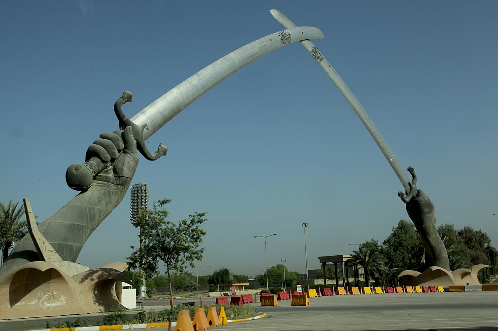

×

Iraq
Традиционная еда
Куббе (kubbeh) — суп с клёцками из булгура с мясной начинкой
Бирьяни — иракский плов из риса, куриного или иного мяса, изюма, зелёного гороха, картофеля и орехов. Приправляется барьяни специальными приправами, а также чёрным молотым перцем и солью.
Мезгуф — блюдо из запечённой на углях либо в духовке целой распластанной речной рыбы.
Долма — очень популярное у иракцев блюдо

Кубба — жареные, варёные или запечённые пирожки с мясной начинкой (либо один пирог на противне), где вместо теста используется крупа бургуль.
Фаляфиль — и другие блюда из гороха нут, а также из фасоли и бобов также широко употребляемы в Ираке.
Кебаб — в качестве специи к которому сумак.
____